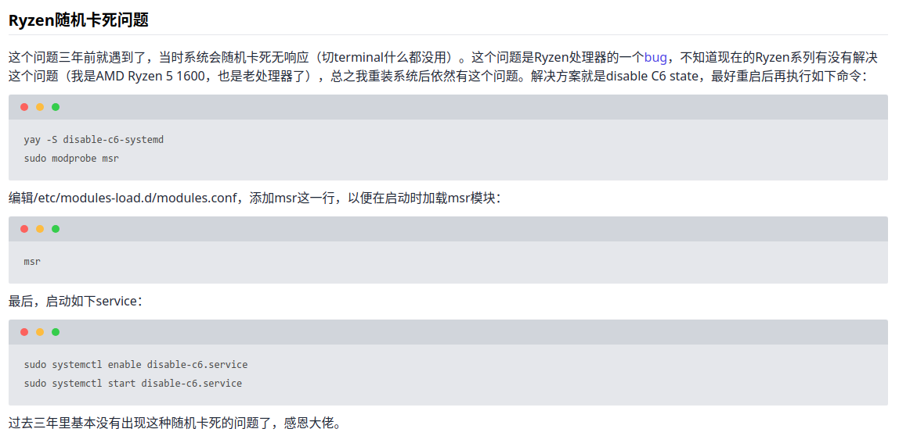
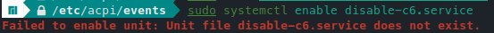
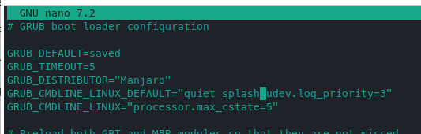

现象：浏览网页，编写文字等正常工作时，会突然卡死，屏幕显示内容不动，鼠标无法移动，键盘没有反应（按下大小写键，大写提示灯不会改变）。且完全随机 ，跟打开软件没有关系。最开始怀疑是Nvidia的显卡驱动问题，但没有找到任何解决方案。因此尝试下面这个方案：Ryzen随机卡死问题、解决方案原git仓库
原博主内容截图：

根据其中的描述
先安装守护进程服务软件
yay -S disable-c6-systemd
sudo modprobe msr
编辑/etc/modules-load.d/modules.conf，添加msr这一行，以便在启动时加载msr模块：
msr
最后，启动如下service，完成上述操作完成后，推荐重启电脑后才能启动。
sudo systemctl enable disable-c6.service
sudo systemctl start disable-c6.service
如果报错，就在重启后重新安装一下，再开service。

另，根据在Manjaro中的讨论，有人在Archlinux的wiki中也找到了同样的问题描述，称之为 Soft lock freezing 。根据其解决方案的描述，提供了四种方案：
-
关闭rcu。考虑到需要编译内核，比较麻烦，大多数情况下不会尝试。
当
Kernel >= 4.10.0，编译内核时，追加参数CONFIG_RCU_NOCB_CPU进行编译。将echo rcu_nocbs=0-$(($(nproc)-1))的结果，添加到grub的GRUB_CMDLINE_LINUX中。 -
关闭c6 state
kernel参数追加
processor.max_cstate=5：在grub的GRUB_CMDLINE_LINUX中添加processor.max_cstate=5processor.max_cstate=5sudo nano /etc/default/grub

保存后，还要运行
sudo update-grub以更新grub。但这个方法有可能不能正确关闭c6状态，此时就需要本文提到的方法，使用
disable-c6-systemd进行关闭。该方法在我的电脑上不可行的，因此我通过disable-c6-systemd进行关闭。 -
某一些笔记本中（例如HP Envy x360 15-bq100na），可能存在CPU软件锁定的问题，通过在kernel中追加参数
idle=nomwait，可以避免。 -
kernel参数追加
pci=nomsi，这个办法我尝试过，但不起作用，仍然会冻结。尝试：acpi_osi=Linux加入的到kernel参数或许有用(我增加这个参数后，仍然会死机，但相较于之前概率小很多)。
补充：这个问题所有的AMD的Ryzen处理器都会遇到！根据 Bug 196683 - Random Soft Lockup on new Ryzen build 这个帖子中的讨论，从2017年就开始存在，一直到现在都没有修复，我使用的是 R7 5800H，甚至在windows下，都有一定概率发生。因此，AMD真的不能yes，下一台笔记本还是intel算了。AMD虽然整体性能已经追上来了，但仍然有一些小问题，虽然不致命，但很让人心烦。希望这个帖子可以帮助你解决问题！
2023/10/13 更新
最近的卡死概率降低了很多，但是在半夜仍然会卡死，看来通过软件在开机启动的时候关闭C6不能完全解决这个问题。
又通过一些搜索，找到了下面的文章：ADM Ryzon处理器随机”冻结”问题、AMD Ryzen CPU 随机“冻结”、AMD Ryzen 2700X + CentOS7 隨機鎖死問題
根据其中的各种描述，解决方法如下：
- 如果你的BIOS支持关闭CPU电源管理，则需要在BIOS中关闭。
- 在内核参数中增加
idle=nomwait - 在内核参数中增加
processor.max_cstate=1 intel_idle.max_cstate=0 - 内核参数更新后，需要手动执行
sudo update-grub以更新配置
通过下列命令查看max_cstate，没有更改之前其值为9。
cat /sys/module/intel_idle/parameters/max_cstate
通过cat /proc/cmdline可以查看内核启动参数。